Projects
An Omen in the Mirror
Gameplay Programmer | Unreal Engine 5 | C++ | Blueprints | Perforce
Overview
An Omen in the Mirror is a 3D narrative puzzle game developed in Unreal Engine 5, where players explore a mysterious mansion and travel between timelines using magical mirrors.
Originally conceived as a three-timeline system, the project evolved through team collaboration into a more focused two-timeline experience. Players take on the role of a reporter investigating Wraith Manor, uncovering its past by physically traversing mirrors and manipulating the environment across time.
My Role
I worked primarily as a Gameplay Programmer, while also contributing to design decisions, system architecture, and team coordination.
- Implementing core interaction systems
- Designing and building puzzle mechanics
- Developing debugging and testing tools
- Integrating telemetry systems for design analysis
- Collaborating closely with designers and artists to ensure systems were intuitive and robust
Game Ideation and Pitch
This project began with a concept I developed in order to recruit a team.
My initial idea centered around a mansion that existed across three timelines — the past, present, and distant future — where players would solve puzzles by interacting with each version of the environment. These timelines could be interacted with through mirrors and mirror shards, allowing the player to manipulate time to progress.
As the concept evolved, I refined the mechanic so that players would physically travel through mirrors, making the interaction more immersive and easier to understand. I also began shaping the narrative. The three timelines would be as follows: A lively and grand mansion in the past, an abandoned and dilapidated old manor in the present, and a ruined, apocalyptic future. The protagonist would venture deeper into the mansion in search of clues as to what caused the apocalypse and how to prevent it.
With this pitch, I developed a presentation featuring my initial concept art to better communicate my vision. I knew I wanted plenty of artists to help bring the mansion's grandiosity to life. After presenting the game to potential teammates, I sought out and spoke directly with programmers, artists, and designers to gauge interest, and I conducted several interviews. In the end, I managed to recruit a full team of 7 programmers, 9 artists, and 4 designers
Through early team discussions and feedback, the scope was refined into a more focused two-timeline system, which became the foundation of the final game.
This process gave me experience not just in designing a game, but in:
- Communicating a clear and compelling vision
- Adapting ideas based on team feedback
- Building and aligning a large, multidisciplinary team from scratch
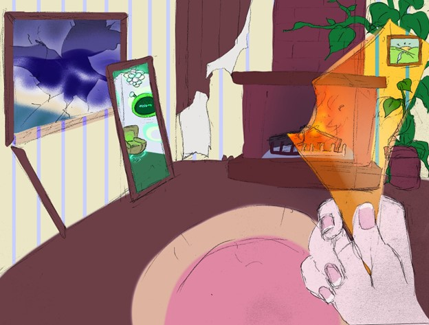
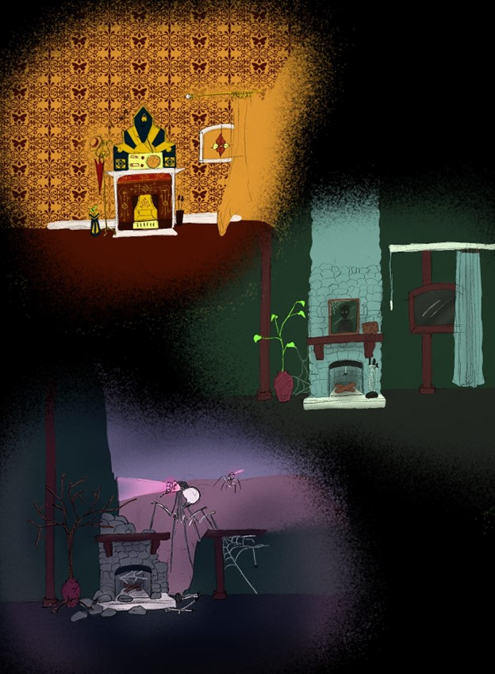
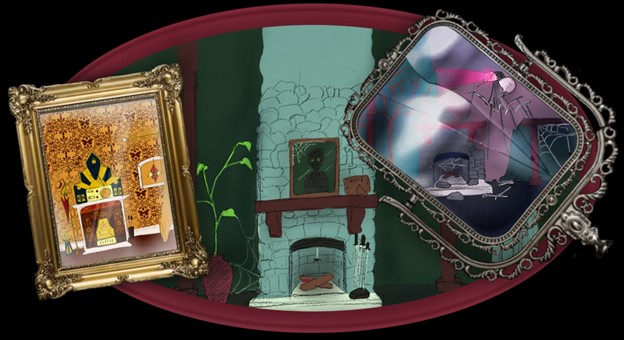
Core System & Mechanics
Object Interaction System
I designed and implemented the object pick-up, placement, and rotation system, which became a core part of player interaction.
Key contributions:
- Designed and implemented the object pickup and placement mechanic based on the player's line of sight
- Added object rotation for more precise placements and player pleasure
- Prevented soft-lock scenarios by disallowing placement near mirrors
- Forced objects to drop when transitioning between timelines
- Improved accessibility by updating visual language due to play-testing feedback (colorblind-friendly adjustments)
This system required careful consideration of player freedom vs. game constraints, especially due to the complexity introduced by time travel mechanics. We've found that players really enjoyed this particular mechanic and would spend time fiddling with placing objects in random places while thinking about puzzle solutions. Restricting or removing this feature often resulted in player dissatisfaction. So I did my best to allow players as much freedom as possible.
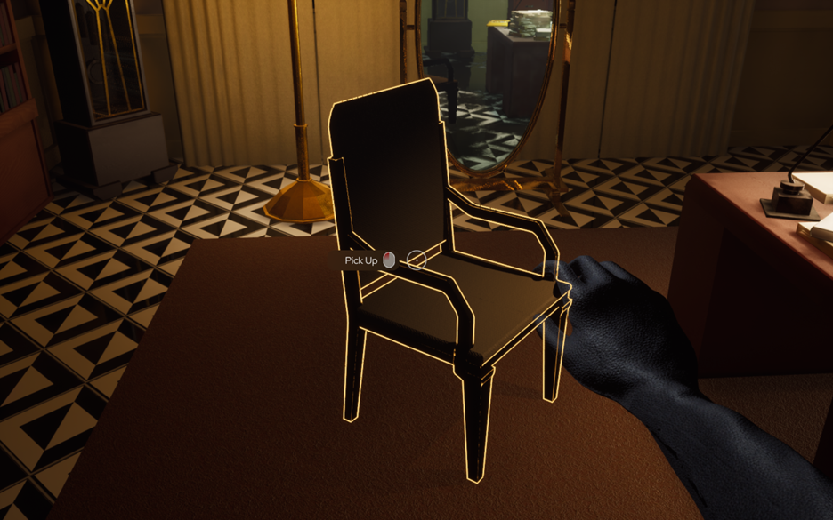
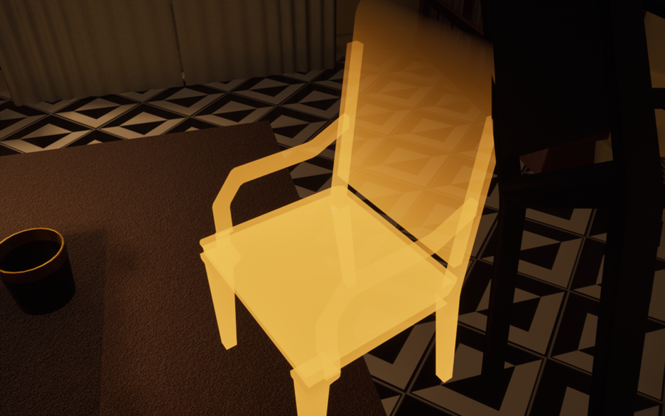
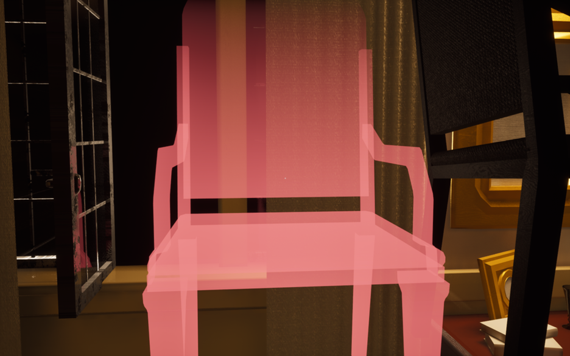
Object Pushing System
I implemented and expanded the pushing mechanic into a designer-friendly and predictable system.
Key contributions:
- Implemented directional push limits
- Added a "rebound" animation to indicate to the player when that limit has been reached
- Ensured mirrored pushable objects behaved consistently across timelines and properly shared their limits
- Created preview tools so designers could visualize movement constraints
- Added functionality to adjust push strength per direction per object
- Added visual indicators (arrows) to communicate valid push directions to players
This system bridged technical implementation and UX clarity, ensuring puzzles felt fair and readable. Although the biggest struggle with any puzzle that involved pushing objects was ensuring that the object's intended path was free of cosmetic obstructions. I conducted several playtests each time a level's layout was changed to ensure a smooth gameplay experience.
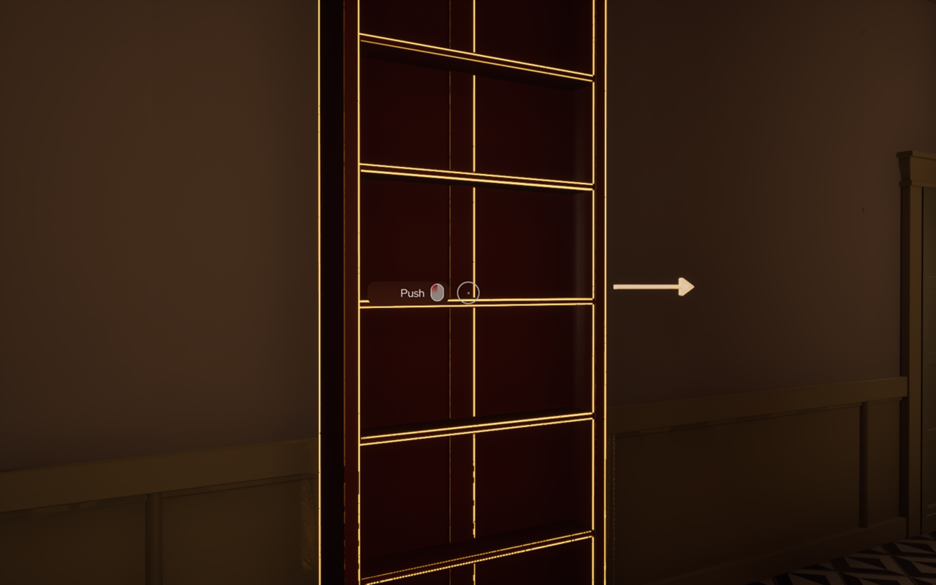
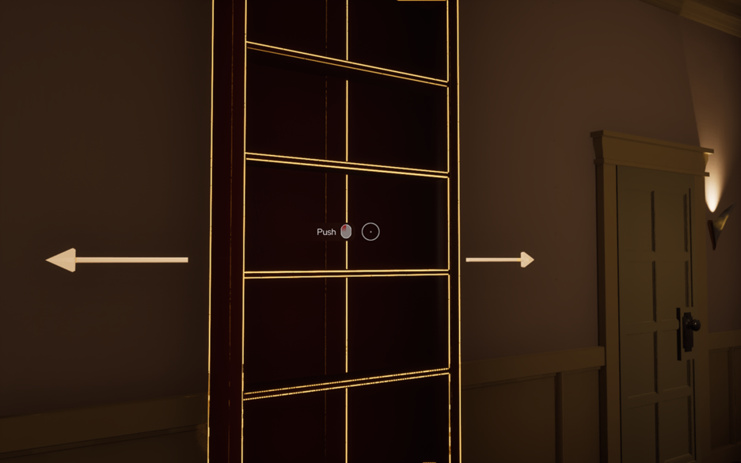
Mirror System & Collision Handling
One of the most complex systems I worked on was refining mirror behaviour.
Key contributions:
- Prevented teleportation into invalid or obstructed spaces caused by linked mirrors being moved
- Allowed asymmetric collision behavior so that mirrors in a different timeline would pass through moved furniture
- Edited and expanded the mirror's collision system to support multiple different behaviors depending on different collision channels
- Created preview tools so designers could visualize movement constraints
- Ensured consistency between mirrored counterparts
The mirrors were the most complex mechanic in the game. It was central to the game's core design and had to interact with several different mechanics at once. Multiple programmers had a hand in its functionality, so maintaining clear communication and proper code organization was key. This required deep debugging and iteration, especially when integrating with other mechanics like pushing and object placement.
Puzzle Design & Implementation
Kitchen Fire Puzzle (Design + Implementation)
This was a puzzle concept I designed, pitched, and implemented into the game. It consists of a lit stove burner in the past, resulting in a burned-down kitchen in the future. In the future kitchen lie notes containing key information for solving a different puzzle, but they are too charred to read due to the fire. The player must identify this and turn off the stove in the past by solving a toggle-switch puzzle, where each stove dial can toggle up to 3 burners at once.
Key contributions:
- Created a non-linear stove system where knobs affect multiple burners
- Designed the logic so players must deduce the correct configuration
- Built a manager system that updates the future timeline based on player actions in the past
- Dynamically swapped textures and notes to reflect timeline changes
This was my favorite puzzle to implement. I had to collaborate with the Designer and Art team to ensure it met our game's style and expectations. I had our special effects artist create a burner flame to use and worked with him to add enough functionality to interact with the stove prop. I had the designers approve my toggle-switch idea and fully implemented every moving piece and animation relating to this puzzle.
This puzzle emphasizes my ability to combine systemic design, player-driven discovery, and cause-and-effect across timelines.
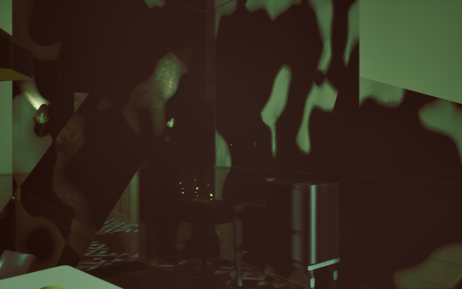
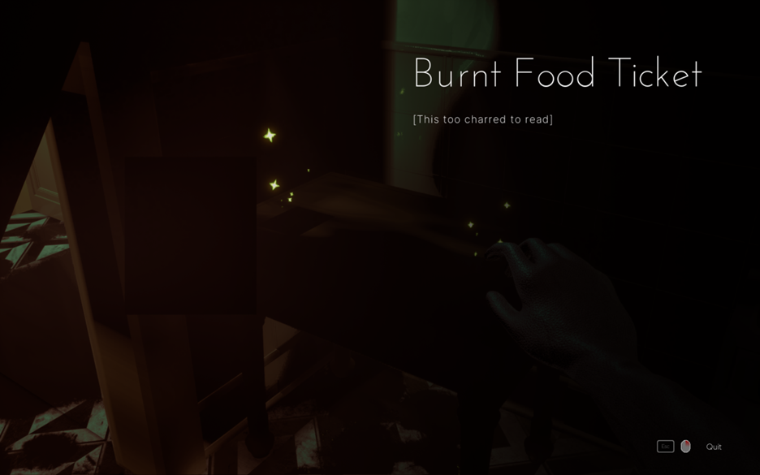
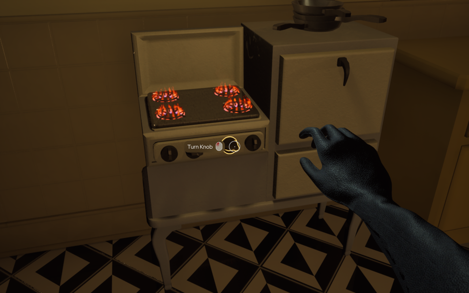
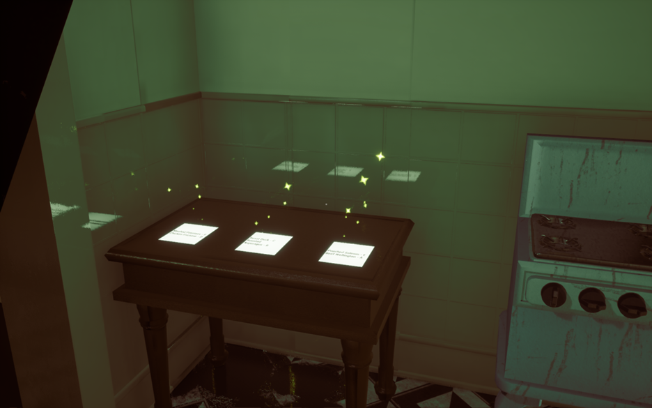
Dining Room Puzzle System
This puzzle directly follows the Kitchen Fire Puzzle. After finding the now-legible notes in the kitchen detailing each dining guest's food order, the player must search the rest of the room for clues on where each dinner guest sat. Once all the information is uncovered, the player must then correctly place each meal in front of the correct seat in the past in order to trigger the next phase of the game.
Key contributions:
- Implemented a state-based manager system that triggers progression to the final stage if and only if the meals are correctly placed
- Implemented working drawers and interactable props for clue discovery
- Added and implemented diagram clues of the guest's assigned seat throughout the level
- Assisted in final puzzle setup and mirror navigation constraints
This system emphasized modularity and scalability, allowing designers to easily tweak puzzle conditions.
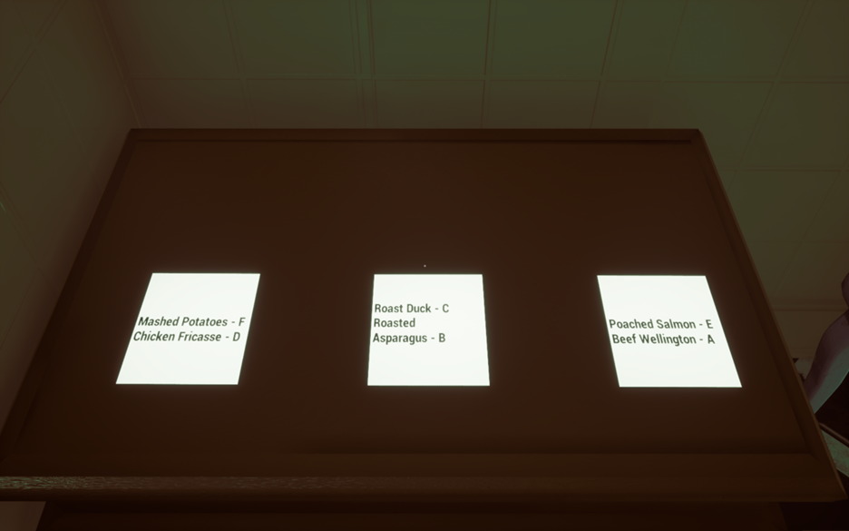
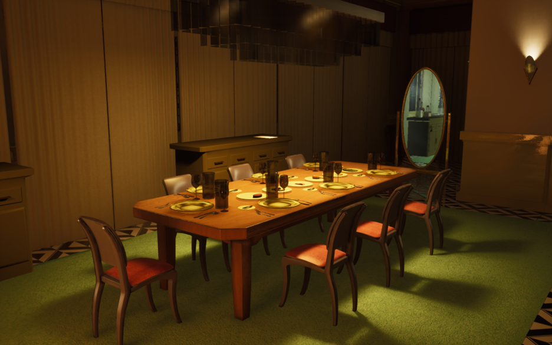
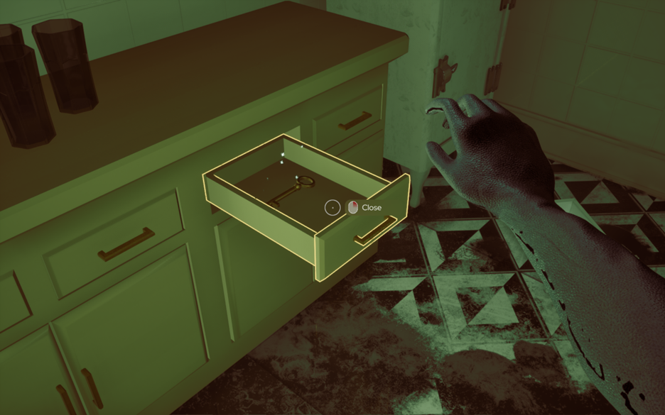
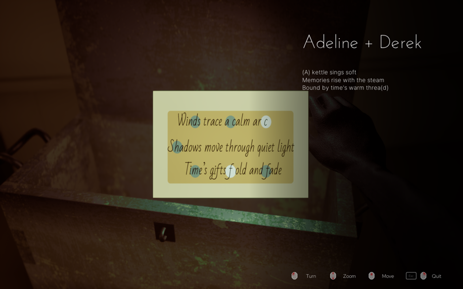
Designer, Debugging, & Development Tools
Key contributions:
- Developed a telemetry system to support design iteration that tracked what objects players interacted with the most per level to better evaluate player behavior
- Implemented A debug/free-fly mode for rapid level navigation and playtesting
- Visualization tools for mechanic tuning
The main goal for each of these tools was to reduce iteration time during development and playtesting. The telemetry in particular required me to work directly with Unreal Engine's C++ code in order to properly implement it.
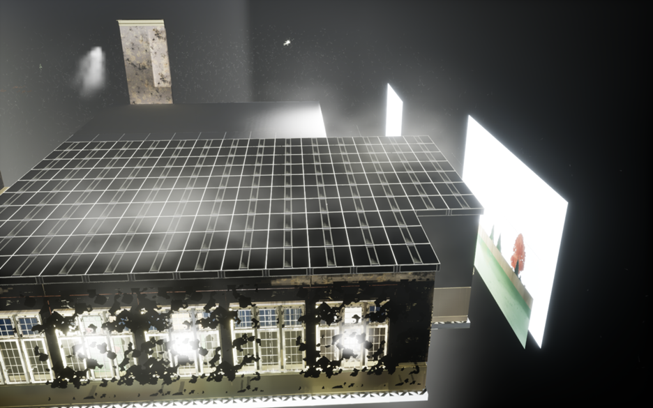
Challenges & Growth
This was the biggest, most diverse team I've ever had the pleasure to work with. Although this meant that the project had more talented people working to make it perfect, it also meant that there were many more opportunities for disagreements and user errors to surface. I have learned a lot about collaboration and team management through this experience.
However, some of my more technical challenges were:
- Integrating C++ with Unreal Blueprints
- Designing systems that remain stable in a collaborative environment
- Debugging complex interactions between multiple systems
- Learning to prioritize technical clarity and usability
Key Takeaways
Through this project I gained:
- A strong ability to bridge design and engineering
- Experience building scalable gameplay systems
- Comfort in working in large, multidisciplinary teams
- A heightened focus on player experience, accessibility, and usability
That being said, I only had a year to learn and adapt to these challenges. Given more time, I would establish stronger development pipelines earlier on, including clearer standards for testing and integrating new changes, to reduce instability between systems. I would also prioritize transitioning more Blueprint-based systems into C++ to improve performance and scalability. Additionally, I would invest more time upfront in creating a detailed technical design document, ensuring that systems are built with integration in mind from the start. Finally, I would encourage more collaboration across disciplines, both through structured communication and team-building efforts, to better align design, art, and engineering throughout development.
Elementokens!
Systems and Gameplay Programmer | Technical Lead | Custom Engine | C++
Available for Download!
Overview
Elementokens is a 2-player turn-based strategy game where players control wizards on a grid, making decisions about movement, positioning, and abilities each turn. The goal is to collect spell cards and use them against enemy wizards until there is only one team left standing. The game emphasizes thoughtful planning, as each action affects both the board state and the player’s available options going forward.
I worked as a gameplay and systems programmer, building both underlying engine features and the gameplay systems that used them. My work ranged from animation and UI systems to pathfinding and player interaction, with a strong focus on making systems reusable and easy to integrate.
A major goal of my work on this project was to bridge the gap between design and implementation, creating systems that were flexible enough to support evolving gameplay without requiring constant rewrites.
Core Systems & Contributions
Animation System
One of the first systems I worked on was the game's animation pipeline. I implemented the core animation system from scratch, ensuring that character sprites and state transitions could be displayed correctly. As the project evolved, I refactored this system into its own dedicated component, allowing animations to be more modular and easier to integrate with gameplay systems.
This refactor made it significantly easier to synchronize animations with player actions such as movement and spell casting, and helped reduce tight coupling between rendering and gameplay logic.
- Designed a component-based animation system integrated into the engine’s ECS architecture
- Implemented time-based frame progression using delta time for consistent playback
- Supported looping and non-looping animations with completion state tracking
- Added sprite-sheet offset support to allow reuse of shared textures
- Exposed manual frame control (increment, decrement, jump) for gameplay synchronization
- Decoupled animation logic from rendering and gameplay systems for modularity
UI & Text Rendering
I was responsible for building much of the game's UI systems, including a custom sprite-sheet-based text rendering system. Initially, I explored implementing TrueType fonts, but due to technical limitations and instability, I pivoted to a sprite-sheet solution to ensure reliability within our engine.
This system supported dynamic text such as spell descriptions and flavor text, and was later refactored to allow flexible alignment and formatting. These tools were critical for communicating gameplay information clearly to the player, as Elementokens! is a very text-heavy game.
- Built a custom text rendering system for both UI-space and world-space text.
- Supported dynamic attachment of text to game objects so labels and interface elements could follow moving entities.
- Implemented horizontal and vertical alignment options to improve layout flexibility.
- Added text box wrapping logic to automatically insert line breaks based on font character widths.
- Supported font changes, font sizing, color control, and formatted string updates.
- Generated per-character render data and uploaded it to a shader storage buffer for GPU-driven text rendering.
Context-Sensitive Action Menu
I implemented a dynamic context bar that displays only the actions currently available to the player, such as movement, casting, or interacting with objects. Instead of relying on static UI layouts, the system builds the menu at runtime based on the current game state.
Each button is generated from a reusable template and paired with a corresponding action, allowing the interface to adapt fluidly as the player’s options change. As buttons are added or removed, the system automatically recalculates layout and spacing to maintain a clean and readable presentation.
This system improved both usability and clarity by ensuring that players were only presented with relevant choices, reducing visual clutter and reinforcing the game’s turn-based decision-making flow.
- Designed a context-sensitive UI system that dynamically displays available player actions at runtime.
- Built a reusable button framework where each button is paired with a specific gameplay function.
- Implemented logic to add and remove buttons based on game state (movement, abilities, interactions).
- Created a layout system that automatically repositions and spaces elements as the menu changes size.
- Separated UI presentation from gameplay logic using function bindings for button actions.
- Improved player experience by reducing clutter and surfacing only relevant decisions.
Wizard Gameplay Integration
I worked on the wizard gameplay object, which served as one of the main points where the engine’s core systems came together. The class integrated movement, animation, physics, UI feedback, health and action point management, spell handling, and tile-based interactions into a single controllable unit.
For movement, I implemented path-following behavior that consumed a precomputed tile path and moved the wizard step by step across the grid while updating facing direction and animation state. As the unit advanced, it could trigger tile effects, interact with map objects, and update contextual UI depending on the result of the move.
I also tied the wizard into turn-based systems such as action points, health bars, spell cards, and contextual targeting. This made the class a central gameplay bridge between lower-level engine systems and the player-facing tactical experience.
- Integrated animation, physics, UI, and gameplay logic into the wizard player-unit class.
- Implemented tile-by-tile path following using a precomputed path generated by the map system.
- Updated facing direction dynamically based on movement velocity to keep animation states synchronized with motion.
- Connected movement to tile interactions, status effects, and tutorial/event checks during traversal.
- Managed player resources such as health, action points, and spell inventory within the turn-based flow.
- Linked the wizard to contextual UI systems, including health bars, arrows, targeting checks, and action menus.
Pathfinding
One of the more technically involved systems I implemented was the game's tile-based pathfinding. Because movement occurred on a grid and each tile had the same traversal cost, I used a breadth-first search approach to expand outward from the starting tile and evaluate valid neighboring positions layer by layer.
As the search progressed, I recorded each visited tile along with its distance from the origin. Once the destination tile was found, I reconstructed the final route by tracing backward through adjacent tiles with decreasing depth values, producing a shortest valid path within the unit's movement range.
I also integrated this system into the game's visual feedback by highlighting the resulting path on the board, helping players understand where their character would move before committing to the action.
Debugging & Build Systems
In addition to feature work, I took ownership of debugging and finalizing the game for submission. This included testing builds on clean machines, resolving last-minute issues, and ensuring the game met project requirements.
As a Build Master, I also helped coordinate final integration efforts across the team, ensuring that all systems worked together cohesively.
Key Takeaways
Through this project I gained:
- Experience wearing multiple roles simultaneously, including programmer, tech lead, co-producer, and build manager
- Strong ownership over both technical systems and team direction in a small development team
- Experience building and working within a custom engine, including designing reusable gameplay and UI systems
- Confidence leading team meetings and helping maintain communication across programmers and designers
Because our team was small, I often had to step beyond pure programming and help guide both technical and team-oriented decisions. This included organizing meetings, keeping development on track, and making sure everyone stayed aligned as the project evolved.
If I were to revisit this project, I would establish clearer technical guidelines early on, particularly around testing and code integration. We occasionally ran into issues where large changes were introduced without enough validation, which slowed development and created avoidable bugs.
Overall, this project taught me how to take ownership of both systems and team processes, and how to adapt quickly when working in a smaller, more flexible development environment.